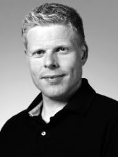

Curriculum Vitae

Personal Information
- 1973
- Born March 19th 1973 in Silkeborg, Denmark.
- 1989-2007
- Deejaying - playing records and CD's at various discotheques
all over Denmark, including Faroe Islands, plus in Sweden, Norway, and
Austria. Professional career from 1992 to 2007, parallel with attending
the university.
- 2000-2006
- Completed three marathons
- 2002-2005
- Chariman of "Sammenslutningen af Anvendt Matematik Studerende
i Odense" - a society for students of applied mathematics at The Maersk Mc-Kinney Moller Institute
in Odense.
Education
- 1979-1989
- Attended elementary school; 1th to 10th
grade at Nordre
Skole, Silkeborg.
- 1994-1997
- Attended high school at Fyns
HF-kursus and VUC Fyn. Majored in
mathematics, physics, chemistry, and english.
- 1997-2007
- Enrolled in Master of Science in Natural Science at the The Maersk Mc-Kinney Moller Institute
- University of Southern Denmark.
- 2005
- Bachelor of Science (B.Sc.) - Applied Mathematics and Software
Production. Do you want to know more?
- 2005-2006
- Attended the JAOO Conference in
Aarhus.
- 2007
- Master of Science (M.Sc.) - Applied Mathematics and Software
Production. Do you want to know more?
Professional Record
- 2005-2007
- Programmer and systems developer at The Mathematical Statistics
Group.
- 2006
- Founded Gennemtænkt
IT(Deepthought Development), a
software development and consulting company. Co-founded with M.Sc. Morten Kristiansen.
- 2006-2007
- Software developer at Rising
Tide.
- 2007-2008
- Systems developer and system architect at Team Online.
- 2008-2009
- Software developer at ALOC.
- 2009
- Full time architect and software developer in Gennemtænkt IT.
Professional Skills
- Programming
- Java - Extensive experience in Java SE and
EE, both at professional level. Experience include knowledge of
advanced topics, such as, reflection, concurrent multi-threaded
programming, and digital signatures and cryptography. Worked with
several open source frameworks, e.g. Spring, Hibernate, ActiveMQ, GoogleWebToolkit, and
several others.
- Groovy & Grails - Developed, extended, and
maintains several professional projects in Groovy & Grails. Groovy and Grails are the
backbone in most of the projects done by Gennemtænkt IT.
- C# - Programming experience from developing
high load desktop clients.
- SQL - Created and managed several relational
databases using SQL, for professional use as well as study projects.
- C/C++ - Programmed several study projects.
- Ruby - Study group experience.
- Python - Programmed several study projects.
- Development
- Platforms - Experience with several
development platforms, including:
- Eclipse: The eclipse
IDE, plus multiple extensions to the platform.
- NetBeans: The NetBeans
IDE, open sourced from SUN.
- IntelliJ IDEA:
The IntelliJ IDE from JetBrains.
- Rational: Rose, XDE,
WebSphere, and Software Modeler, and Software Architect.
- MS
Visual Studio: The .NET IDE from Microsoft.
- Processes - Experience from working with
several different development prosesses, including:
- Software Quality - Experience in securing
high software quality through the use of continuous unit and
integration testing. Working knowledge with:
- Unit testing - The JUnit
framework, and, to a lesser extent, also NUnit.
- Integration testing - The FIT
framework.
- Continuous integration - Hudson
continuous integration server.
- Mathematics
- Mathematics in software - Working knowledge from applying
mathematics to solve software problems, such as, transformations in 3D
space, vehicle routing, and artificial intelligence.
- Math software - Experience from using
the following mathematical software packages: Mathematica, Matlab, and Maple.
Language Skills
- Danish
- Native.
- English
- Reads and writes at expert level. Educated at high school
level. Primary language in courses and literature at the university.
Bachelor thesis and master thesis were both written in english.
- German
- 6 years in school, incl. 2 years at high school. Additionally
5 months from living i Austria.